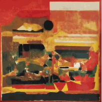

|
|
this is a a a a a a a a a a a a a a a a a a a a a a a a a a a a a a a a a a a a a a a a a a a a a a a a a a a a | Home | a a | Exhibitions | a a | Shop | a a | About Us | a a | Contact Us |
| One of India's best-known Modernist painters, the late SH Raza, receives his largest-ever retrospective at the Centre Pompidou in Paris. SH Raza (1922-2016) (until 15 May) is the first major monographic show of the artist, as well as the first to take place in a state-run institution, and brings together more than 90 works in the capital city of his second home. The Pompidou show spans the artist's entire career, from his beginnings in 1940s Mumbai (then called Bombay), where he was one of the founding members of the hugely influential Bombay Progressives Artists' Group, to his move to France in 1950, where he would be based on-and-off for the remainder of his life, and where he developed a style that mixed post-war French and American painting with Rajasthani miniature. His subjects ranged from country landscapes and churches to Indian temple congregations, Islamic architecture and Western cityscapes; eventually he moved into his more abstract—and arguably better-known—period, which dates from the late 1960s onwards and incorporates elements of Tantrism from South Asian scriptures. |
a a a a aa a a a a a a a a a a a a a a a a a a a a a a a a a a a a a a a a a a a a aa a a a a a a a a a |  | a a a a a |